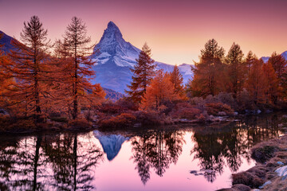
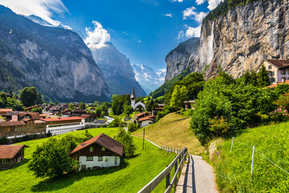
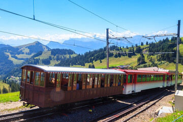

|  |
MATTERHORN \ ZERMATTThe Matterhorn pierces the sky with timeless grace. Snow clings to its sharp, majestic edges. Zermatt sparkles under fairy-lit winter evenings. Horse-drawn carriages echo softly on cobbled streets. Here, the Alps feel powerful, proud, and eternal. |
LAUTERBRUNNEN VALLEYWaterfalls tumble like silver ribbons from towering cliffs. The valley breathes in mist and wildflower perfume. Chalets sit quietly beneath dramatic alpine walls. Clouds drift lazily through emerald meadows. Lauterbrunnen feels like a whispered fairytale. |
 |
|  |
MOUNT RIGISunrise spills gold over calm blue lakes below. Rolling peaks glow softly in morning light. The air feels crisp, pure, and endlessly peaceful. Wildflowers sway along gentle mountain paths. Rigi stands serene — the Queen of the Mountains. |
FOODGolden fondue bubbles softly, wrapping the air in warmth and comfort. Raclette melts like a slow winter dream over tender potatoes. Silky Swiss chocolate rests sweetly on the tongue, rich as alpine dusk. Buttery rösti crackles in quiet mountain kitchens. Every bite tastes like snow-kissed fields and tradition. |